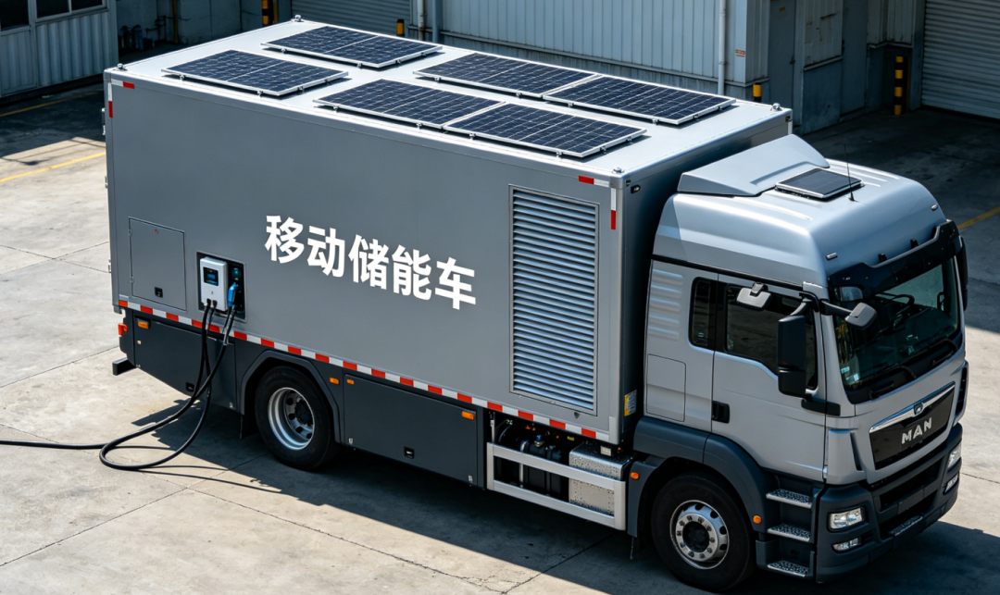
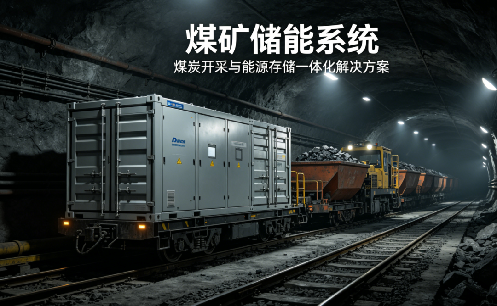

在我国加速推进能源绿色转型、构建新型电力系统、落实“双碳”战略的大背景下，储能技术成为能源体系升级的核心支撑。相较于传统固定式储能，移动式储能凭借灵活部署、可移动、快响应、无固定场地约束的独特优势，打破了电力供给的时空限制，不再局限于固定站点储能调峰，可适配多场景、跨区域电力调配，是新型电力系统中极具价值的柔性资源，对保障能源安全、优化能源结构、赋能产业发展、完善应急保障体系具有不可替代的重要作用。
灵活调节电网负荷，筑牢新型电力系统运行根基
新型电力系统以风电、光伏等新能源为核心，而新能源发电具有间歇性、波动性、随机性特征，大规模并网极易造成电网峰谷差拉大、供需失衡、电压波动等问题，给电网稳定运行带来巨大挑战。传统固定式储能布局固定、调度灵活性有限，难以适配区域动态用电变化。
移动式储能可实现“动态削峰填谷”，精准适配电网运行需求。用电低谷阶段，设备可就近消纳光伏、风电富余绿电，避免新能源弃电浪费；用电高峰阶段，可快速调度至负荷密集区域补电，缓解局部电网供电压力，无需大规模开展电网扩容改造。同时，移动式储能能够参与电网调频、调压、备用等辅助服务，快速响应电网波动，弥补传统电网调节资源不足的短板，大幅提升电网的适配性、稳定性与自愈能力，成为电网安全高效运行的重要柔性底盘。
助力双碳目标落地，推动能源绿色低碳转型
实现碳达峰、碳中和目标，核心在于构建清洁低碳、安全高效的能源体系，持续提升可再生能源消纳利用率。长期以来，风光新能源“发用不同步”的问题突出，大量清洁能源因电网消纳能力不足被浪费，制约了新能源装机规模的进一步提升。
移动式储能突破了固定储能的空间局限，可灵活进驻新能源电站、偏远新能源基地，动态储存富余发电量，有效解决新能源消纳难题，大幅提升风光发电的利用率。同时，其可替代传统柴油发电机等燃油供能设备，广泛应用于工地施工、户外作业、临时赛事等场景，以清洁电力替代化石能源消耗，减少燃油燃烧带来的碳排放与空气污染。通过“储能+移动”的模式创新，推动绿电跨场景、跨区域高效利用，加速传统高耗能供能模式迭代，为能源结构低碳转型、双碳目标稳步落地提供关键支撑。
强化应急保供能力，提升社会能源安全韧性
极端天气、地质灾害、电网故障等突发情况，极易引发局部停电，直接影响民生保障、公共服务与重点行业运行。传统应急供电方式以固定备用电源、柴油发电机为主，存在部署慢、机动性差、污染高、续航有限等短板，难以适配复杂突发场景的供电需求。
移动式储能设备部署便捷、启动快速、静音环保、适应性强，可快速奔赴断电灾区、偏远故障区域，为医院、交通枢纽、通信基站、政务中心等关键公共设施提供不间断应急电力，保障民生基本运转和抢险救灾工作有序开展。同时，在矿山、港口、野外勘探等特殊作业场景，可应对突发断电风险，保障工业生产安全；在城市电网改造、线路检修场景，可临时替代电网供电，实现不停工、不停产，最大限度降低停电损失，全面提升全社会能源应急保障能力与能源安全韧性。
赋能多元产业发展，激活能源经济新动能
移动式储能适配工业、交通、基建、新能源服务等众多领域，能够有效破解各类场景的用电痛点，降低产业运营成本，赋能实体经济高质量发展。在工业领域，矿山、工厂等场景可通过移动式储能实现峰谷电价套利，规避高峰用电高额电费，同时稳定生产用电电压，降低设备损耗，据行业数据显示，应用移动储能可有效降低工矿企业30%-40%的综合用能成本。
在新能源汽车领域，移动式储能补电车打破了固定充电桩的场地与电网容量限制，可在商圈、小区、高速服务区等充电热点区域灵活补能，解决新能源汽车充电难、高峰充电拥堵问题，完善新能源汽车配套服务体系，助力新能源汽车产业普及。在基建领域，户外施工、临时场馆建设无需搭建专用供电线路，依托移动式储能即可满足用电需求，大幅缩短项目筹备周期、降低基建投入。此外，移动式储能可聚合形成分布式能源资源，接入虚拟电厂参与电力市场交易，创新能源商业化模式，催生储能服务新业态，为能源产业经济增长注入新动力。
补齐偏远区域短板，实现能源普惠均衡供给
我国部分偏远乡村、山区、野外作业区域，存在电网基础设施薄弱、线路覆盖不足、扩容改造成本高昂等问题，长期面临供电不稳定、无可靠供电的困境，制约了当地生产生活与区域发展。
移动式储能无需依赖固定电网配套，可独立作为分布式供能单元，为偏远村落、野外基站、农业种植养殖基地、边境站点等区域提供稳定清洁电力，补齐偏远地区能源基础设施短板。这种轻量化、可移动的供能模式，避免了大规模电网铺设的高额投入，以低成本、高效率的方式实现电力资源普惠供给，助力乡村振兴、偏远区域开发建设，推动城乡能源服务均衡化发展。

煤炭作为国家主体能源，承担着保障能源安全稳定供应的核心使命。传统煤矿生产长期面临供电稳定性不足、能耗成本偏高、低碳转型滞后、闲置资源浪费等痛点。煤矿储能作为适配矿山场景的新型储能应用模式，依托“平急两用、峰谷调节、绿电消纳、资源复用”的核心优势，深度融入煤矿生产全流程，是推动煤炭行业安全升级、节能降碳、绿色转型、盘活存量资源的关键抓手，对煤炭产业高质量、可持续发展具有极强的现实意义与战略价值。
筑牢安全生产底线，彻底破解矿山失电安全风险
安全生产是煤矿生产的核心底线，井下通风、瓦斯抽排、排水、提升运输等核心设备的稳定供电，直接关乎矿山人员安全与生产安全。我国煤矿普遍采用双回路外部电网供电，但极端天气、线路故障、电网检修等突发情况，仍可能引发双回路同时失电，造成井下关键设备骤停，极易引发瓦斯积聚、积水淹井、人员滞留等重大安全隐患，传统应急保障体系存在明显短板。
煤矿储能系统具备毫秒级快速响应能力，可作为矿山专属应急备用电源，完全替代传统柴油发电机。在主电网断电瞬间即刻启动，持续为井下核心安全设备、监控通信系统、照明系统提供不间断电力，有效规避失电引发的各类安全事故，筑牢矿山安全生产第一道防线。同时，储能系统可稳定矿区供电电压、平抑电网功率波动，解决大型采掘设备启停带来的电网冲击问题，保障生产设备平稳运行，降低设备故障概率，全方位提升煤矿生产的安全韧性与抗风险能力。
优化用能结构，大幅降低煤矿生产运营成本
煤矿属于高耗能工业场景，采掘、运输、洗选、通风等全流程用电负荷大、用电时段集中，长期面临高峰电价高、用电损耗大、能耗浪费严重的问题，企业用电成本居高不下。同时，露天煤矿矿卡下坡制动、设备启停过程中会产生大量富余机械能，传统模式下全部转化为热能损耗，造成能源严重浪费。
布局煤矿储能可实现精细化能源管控，依托峰谷电价差开展套利运营，在电网用电低谷时段储电、高峰时段放电，大幅削减高峰用电电费支出，有效降低企业综合用电成本。针对露天矿区运输场景，专用储能设备可回收矿卡下坡制动产生的富余能量，实现能量循环利用，减少燃油与电力消耗，降低设备磨损和运维成本。此外，储能系统可替代高能耗、高污染的柴油应急机组，减少燃油采购、储存、运维成本，进一步优化矿山能耗结构，提升企业经营效益。
赋能绿色低碳转型，助力煤炭行业双碳达标
双碳目标下，传统高碳煤矿亟需摆脱粗放式生产模式，实现从“高碳生产”向“绿色低碳”转型。当前多数矿区配套建设分布式光伏、风电等新能源项目，但新能源发电的间歇性、波动性特征，导致矿区绿电消纳率低、弃电现象突出，难以大规模替代传统火电，矿山低碳改造进度受限。
煤矿储能可有效平抑风光新能源出力波动，储存矿区富余绿电，实现新能源就地消纳、就地利用，大幅提升矿区清洁能源利用率，逐步构建“风光储一体化”矿山供能体系。以清洁储能电力替代传统火电、燃油供能，可显著减少矿区生产碳排放、废气与粉尘排放，彻底改变煤矿高耗能、高污染的传统标签。同时，储能系统无废气、噪音污染，适配井下、矿区全域场景使用，助力煤矿达成绿色矿山、智能矿山建设标准，推动煤炭行业完成低碳转型升级。
盘活闲置矿山资源，打造循环经济新模式
随着煤炭行业去产能、老旧矿井关停退出，国内形成大量废弃矿井、采空区、地下巷道及闲置工业场地，大量优质空间资源、基础设施长期闲置浪费，缺乏高效利用路径，同时闲置矿井还存在地质塌陷、环境破坏等潜在风险。
煤矿储能可依托废弃矿井、地下采空区改造建设抽水储能、重力储能、储热储能等长时储能项目，复用原有巷道、通风、排水、输电配套设施，大幅降低储能项目建设选址、土建与设备投入成本。通过存量矿山资源的资源化、能源化再利用，将废弃矿井转化为新型储能电站，实现“闭坑矿井变绿色能源基地”的转型突破，既盘活了闲置国有资产、消除废弃矿山安全隐患，又拓展了储能规模化落地场景，构建煤炭行业“开采—利用—再生”的循环经济体系，延伸煤炭产业生命周期。
支撑智能矿山建设，推动煤炭产业升级迭代
智能化、数字化、绿色化是现代煤矿产业升级的核心方向。智能采掘、无人矿山、远程监控、数字化管控等智能系统，对电力供应的稳定性、连续性、及时性要求极高，传统电网供电模式难以适配智能矿山高精度、高可靠的用电需求，电力波动、短时断电都会导致智能设备停机、数据中断，影响矿山智能化生产。
煤矿储能可构建“电网供电+储能备用”的双保障供电体系，为矿山智能化设备、数字化系统提供持续稳定的电力支撑，保障无人采掘、智能运输、在线监测等智能系统全天候稳定运行，夯实智能矿山建设的能源基础。同时，规模化煤矿储能可聚合为分布式能源节点，接入区域虚拟电厂，参与电网调峰、调频等辅助服务，拓展煤矿多元化经营业态，推动传统煤炭企业从单一能源生产主体，向综合能源服务企业转型，激活煤炭产业新发展动能。
文章及图片来源于网络，版权归原作者所有，如有侵权，请联系删除。
如需推广宣传请后台私信留言
目前已有1.5W+储能行业人士已关注我们关注量还在不断上涨
记得留言
记得分享
*记得点赞*
*记得点在看*
*记得转发朋友圈*
——The End——